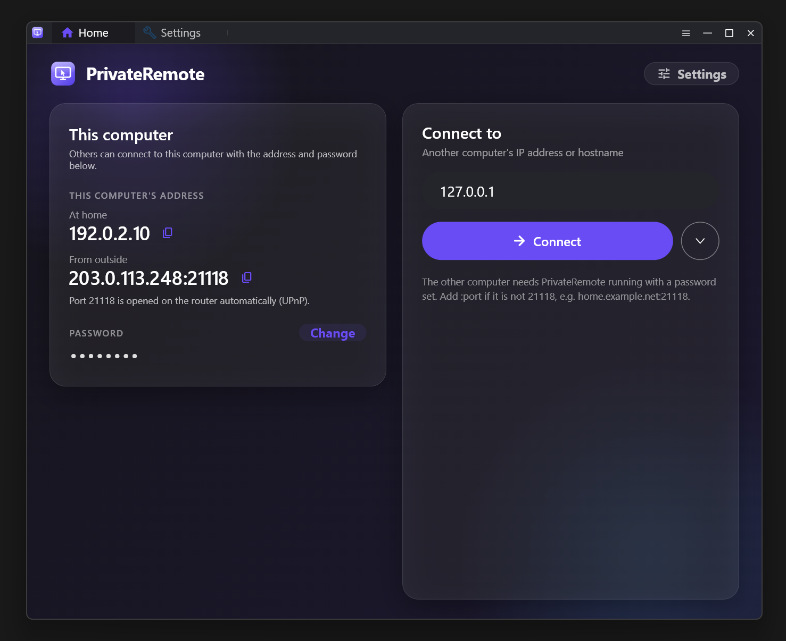
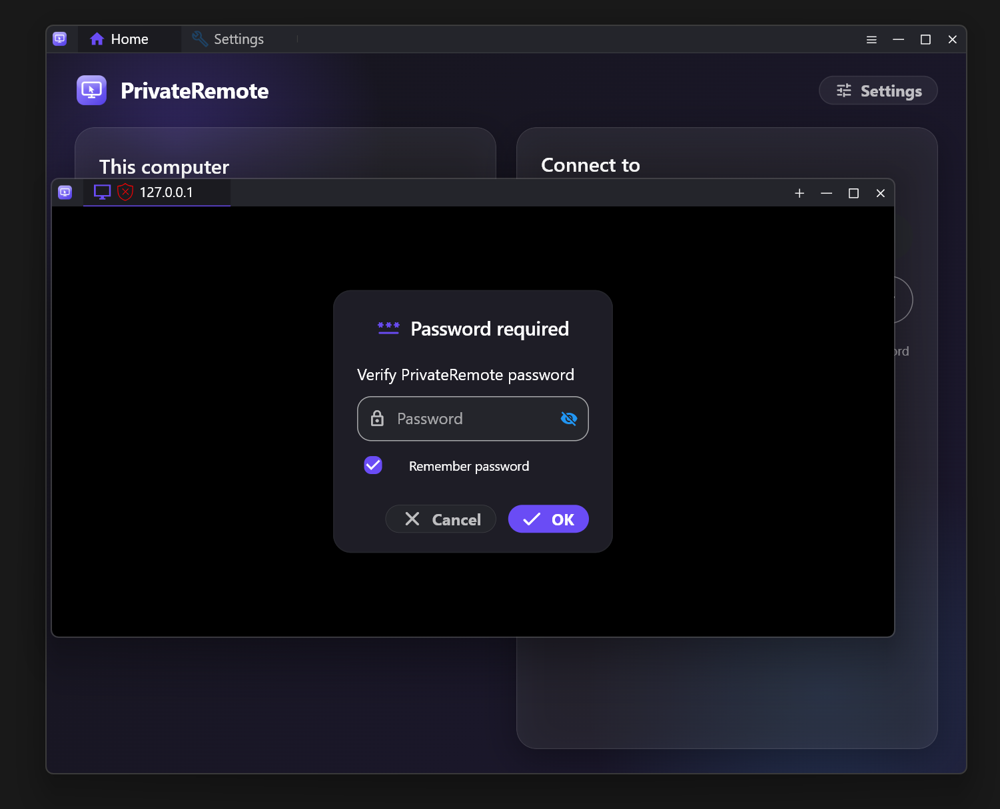
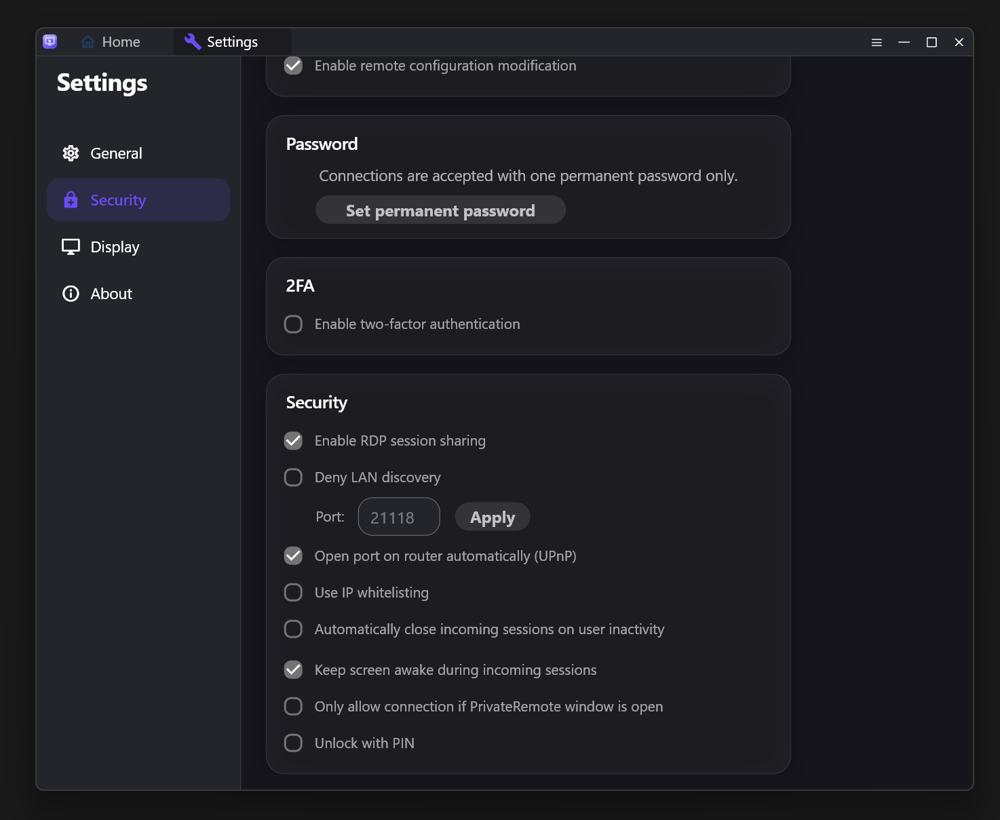

PrivateRemote 1.0 · Windows · macOS · Linux
Control your home PC from your laptop at work, or the other way round. PrivateRemote connects straight to your computer's IP address, with one permanent password. No account, no company server in the middle, no subscription.Управлявай домашния си компютър от лаптопа в офиса или обратното. PrivateRemote се свързва направо към IP адреса на компютъра ти, с една постоянна парола. Без акаунт, без чужд сървър по средата, без абонамент.
One-time payment through Gumroad. Signed installers for all three systems and the full source code.Еднократно плащане през Gumroad. Подписани инсталатори за трите системи и целият сорс код.
What it isКакво е
Most remote desktop tools route your screen through the vendor's servers and ask you to sign in. PrivateRemote does neither. You open one port on your home router, and your laptop talks to your PC directly.
Повечето програми за отдалечен достъп прекарват екрана ти през сървърите на фирмата и искат да влезеш с акаунт. PrivateRemote не прави нито едното. Отваряш един порт на домашния рутер и лаптопът ти говори директно с компютъра.
The same app is both sides: install it on every computer you own, and any of them can control any other.
Едно и също приложение е и двете страни: инсталираш го на всеки свой компютър и всеки от тях може да управлява другите.
203.0.113.24:21118192.168.1.50The app shows both addresses with a copy button. Example addresses.Приложението показва двата адреса с бутон за копиране. Адресите са примерни.
your-ip:21118 and connect. Nothing to register.Пишеш твоето-ip:21118 и се свързваш. Нищо за регистриране.ScreensЕкрани



Real app, Windows 11. Addresses shown are documentation examples. Tap a screen to see it full size.Истинското приложение под Windows 11. Адресите са примерни. Докосни екран, за да го видиш в цял размер.
RequirementsИзисквания
| Windows | Windows 10 / 11, x64 |
|---|---|
| macOS | macOS 11 Big Sur or later, Apple Silicon Macs only (M1 or newer)macOS 11 Big Sur или по-нов, само Mac с Apple Silicon (M1 или по-нов)Intel Macs are not supported.Intel Mac не се поддържа. |
| Linux | x86_64 · Ubuntu 24.04+ / Debian 13.deb package or portable .tar.gz.deb пакет или преносим .tar.gz |
| NetworkМрежа | One open port on the router of the computer you connect toЕдин отворен порт на рутера при компютъра, към който се свързвашTCP 21118. Your internet provider must give you a real public IP (not CGNAT).TCP 21118. Доставчикът ти трябва да дава истинско публично IP (не CGNAT). How to checkКак да провериш |
PriceЦена
No subscription. No licence key.Без абонамент. Без лицензен ключ.
Price with VAT. Gumroad works out the VAT for your country at checkout, so the final amount can differ by a few cents. Payment and receipt go through Gumroad.Цената е с ДДС. Gumroad изчислява ДДС за твоята държава при плащането, затова крайната сума може да се различава с няколко цента. Плащането и разписката минават през Gumroad.
Source codeСорс код
Open source under AGPL-3.0. You pay for the ready, signed installers and support. Source code included.Отворен код под AGPL-3.0. Плащаш за готовите, подписани инсталатори и поддръжката. Сорс кодът е включен.
The complete source code of each version comes free with your purchase, on the same Gumroad page as the installers (PrivateRemote-1.0.0-source.zip). You can also ask for it by email at info@reviewcomfort85.com.
Пълният сорс код на всяка версия идва безплатно с покупката, на същата Gumroad страница като инсталаторите (PrivateRemote-1.0.0-source.zip). Можеш да го поискаш и по имейл на info@reviewcomfort85.com.
Under the AGPL-3.0 you may study, change and share it. There is no EULA that says otherwise. Full licence text: gnu.org/licenses/agpl-3.0.
Според AGPL-3.0 можеш да го разглеждаш, променяш и споделяш. Няма лицензно споразумение, което да казва друго. Пълният текст на лиценза: gnu.org/licenses/agpl-3.0.
Copyright © 2026 REVIEW COMFORT 85 LTD.
PrivateRemote is open-source software under the AGPL-3.0. Full attribution and licence notices are in the app's About screen and in the NOTICE file in the source code.PrivateRemote е софтуер с отворен код под AGPL-3.0. Пълната атрибуция и бележките за лиценза са в екрана „Относно“ на приложението и във файла NOTICE в сорс кода.
This program comes with absolutely no warranty; see the AGPL-3.0 for details.Програмата е без никаква гаранция; подробности в AGPL-3.0.
Questions first? Read theИмаш въпроси? Виж FAQ or write toили пиши на info@reviewcomfort85.com.
Buy PrivateRemoteКупи PrivateRemote€9.99 incl. VAT